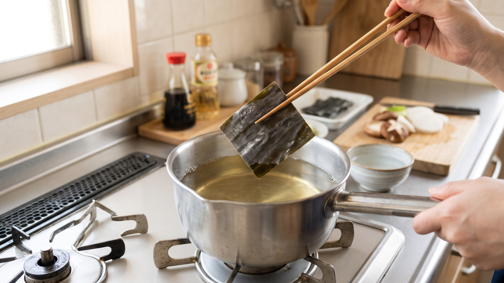

昆布だしは本当に「沸騰前」に取り出すべき？理由と基本の手順
「昆布は沸騰する直前に取り出してください」という説明を見て、「少し沸騰させたほうが、もっとだしが出るのでは？」と思ったことはありませんか。
昆布を沸騰直前に取り出す理由は、シンプルに「ぬめりを出さないため」です。
熊本市の手順書には、ぬめりを出さないために「沸騰させないこと」と書かれています。芦屋市の手順書でも、昆布を入れているときは沸騰させないよう注意することが示されています。ぐらぐらと煮立てるのではなく、小さな泡がふつふつとしてきた煮立つ直前のタイミングで引き上げるのがポイントです。
うま味を上手に引き出すコツ
火にかけて煮立たせなくても、先に昆布を水につけておくことで、火にかける時間が短くてもだしのうま味が出やすくなると考えられます。
鍋へ水と昆布を入れたら、すぐに火をつけるのではなく、少しそのまま置いてから温めるのがおすすめです。
基本の昆布だしの取り方
家庭で無理なくできる、基本の分量と手順です。
材料
* 水：1,100ml * 昆布：10g（10cm角1枚）
手順
- 昆布の汚れをふき取る: 昆布の表面の汚れをきれいにふき取ります。表面についている白い粉はうま味なので、ふき取らずそのまま残します。
- 切り目を入れる: 昆布の繊維に直角に切り目を入れます。
- 水に浸す: 鍋に水1,100mlと昆布を入れて、30分ほど浸します。
- 火にかけ、煮立つ直前に取り出す: 火にかけ、煮立つ直前に昆布を取り出します。ぬめりを出さないため、沸騰はさせません。
夕食作りの流れに合わせるコツ
夕食を作り始めるとき、一番はじめに鍋へ水と昆布を入れておきます。
30分ほど浸している間に野菜を切ったり、メインのおかずの下ごしらえを進めたりするとスムーズです。準備が整ったところで火にかけ、小さな泡が出て煮立つ直前になったら昆布を引き上げるだけで、手際よくだしが取れます。
まとめ
昆布を沸騰直前に取り出すのは、ぬめりを抑えるための大切なポイントです。あらかじめ30分水に浸しておくと、短時間温めるだけでもうま味が出やすくなると考えられます。ぜひ今夜のお料理から試してみてください。